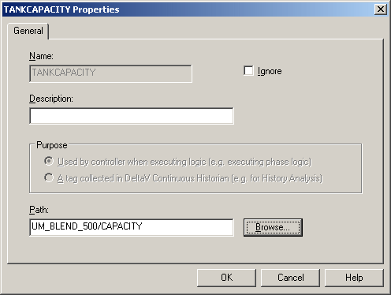

Earlier we created an alias, TANKCAPACITY, that can be used to reference the unit parameter CAPACITY. Now we need to bind the alias to the unit parameter in both the Blender unit modules.
Under UM_BLEND_500, click Aliases.
Click View > Details to see the parameter reference paths to which the aliases are bound. Note that TANKCAPACITY is not bound.
Double-click TANKCAPACITY to open the Alias dialog.
Browse to the parameter reference path.

Repeat the process for UM_BLEND_600.
Note If an alias is not going to be bound to a parameter reference path, it is important to open the Properties dialog for the alias and select the Ignore box.